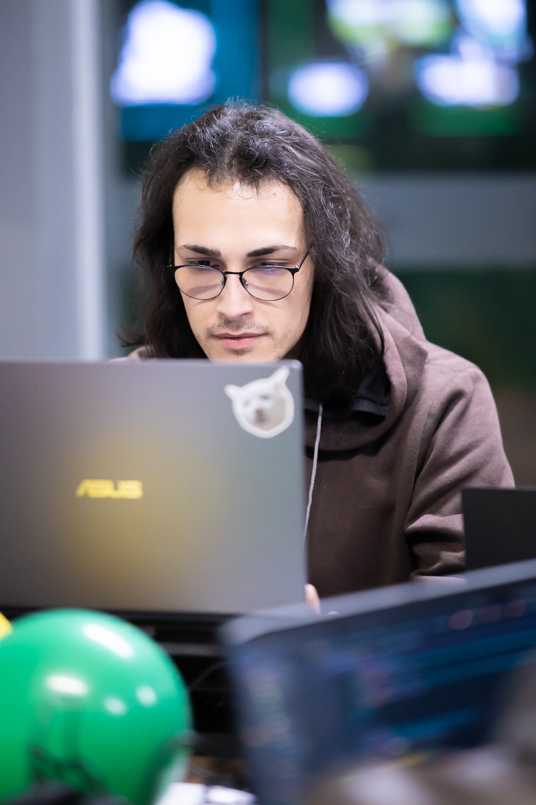

UI/UX Designer based in Lages, SC, Brazil. Specialist in digital experiences, high-conversion interfaces and user research, from discovery to handoff.
I'm a UI/UX Designer specialized in digital interfaces, high-conversion landing pages and user research. My approach combines UX Research data with design decisions that connect businesses and people.
I apply the Double Diamond process, from immersion to handoff, ensuring every solution is grounded in real research, not intuition. Every pixel has a strategic reason.
Throughout my career, I've worked in sectors such as finance, social security, digital health and corporate travel, building a diverse portfolio that demonstrates UX depth and consistent results delivery.

Every project starts with questions, not pixels. I apply methodologies like Double Diamond and Design Thinking to ensure visual solutions are grounded in real data and genuine user needs.
Problem immersion, user research, competitive analysis and deep understanding of the business context.
Insight synthesis, persona creation, journey mapping and clear problem statement definition.
Ideation with Crazy Eights, wireframes, navigable prototype and structured design system in Figma.
Usability testing, iteration based on real feedback, handoff and complete documentation for development.
Available for freelance projects and full-time remote opportunities. Whether a full brief or just an initial idea, I'd love to hear about your project.